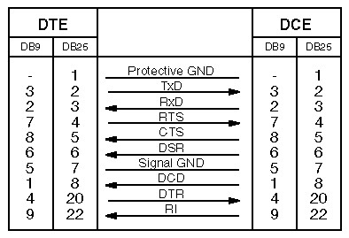
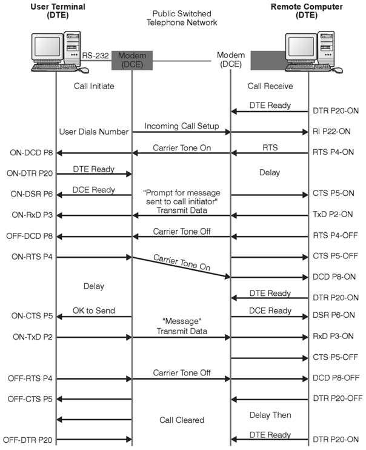
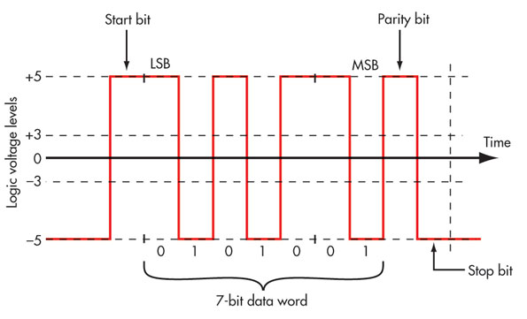

RS-232
El interfaz RS-232 se creó con el propósito de ser el interfaz entre el equipo de tratamiento de datos (DTE) y el equipo del circuito de datos (DCE) mediante el intercambio de datos serie. En concreto, se creó para conectar los equipos de datos a los módems donde se colocaba el teléfono.
El interfaz RS-232 define los niveles de tensión que corresponden a los niveles del cero y el uno lógicos al colocarlos en la línea de transmisión. Las señales válidas deben estar en el rango de entre +3 y +15 voltios o en el rango de entre -3 y -15 voltios, todo respecto a masa. Por tanto, el rango entre -3 y +3 voltios no es válido para el RS-232.
En las líneas de transmisión (TxD, RxD y las demás) el uno lógico es definido como una tensión negativa, y se le llama "marca". Es cero lógico es positivo y se le llama también "espacio".
Conexión null modem
UART
Aunque no forma parte del estándar RS-232, la mayor parte de los dispositivos serie usan lo que se denomina universal asynchronous reciever transmitter (UART). Este circuito integrado aisla los circuitos digitales de los de la línea de transmisión y recepción. Realiza la conversión paralelo-serie y serie-paralelo, añadiendo los bits de arranque parada, paridad, etc.
Limitaciones:
Las principales limitaciones de RS-232 en su uso para comunicar equipos industriales son:
- Es una comunicación punto a punto
- La distancia máxima son 15 m (50 pies)
- La velocidad máxima con la que se definió el estándar son 20 kbps aunque actualmente se alcanzan los 115000 bps
- Los niveles de señales de -3 a -15v y +3 a +15v no son compatibles con las fuentes de alimentación usadas normalmente
